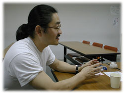
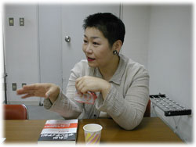
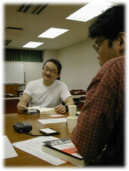
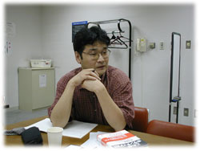

|
阪神大震災以後の市民活動に迫る
森口 今回、なぜ、この本をつくったのかというと、ボランティアやNPOといった市民活動全体を見渡したかったからなんです。
よく言われるように、95年の阪神・淡路大震災以後、さまざまな立場や年齢、地域の人たちがボランティア活動に参加するようになりましたよね。活動分野もすごく幅広くなって、反戦平和の市民運動から、社会的弱者への支援、自分の趣味や「生きがい」を生かす活動まで、「ボランティア」と言われるようになった。反体制的な市民運動をつづけてた人が行政や企業とコミットする活動を始めたりして、運動自体にも地殻変動が起こってきている。そういう中で、あらためて、いま、ボランティアやNPOがどうなっているのか、見渡せる本をつくりたいと思った。
でも、ぼくはそれに関する専門家でもなければ、研究者でもない。全体を俯瞰するのは、とても自分の手に負えないだろうと。それで、インタヴュー集というかたちが思い浮かんだんです。ボランティアの一人ひとりの悩みやとまどい、喜びといった肉声が伝わる読み物にしよう。単なる活動紹介にとどまらないで、ボランティアの人たちの息吹が感じられる本にしたほうがヴィヴィッドに伝えられて、おもしろいんじゃないか。むしろ、全体をまとめないで、いろんな活動があってとっ散らかってるのが、いまのボランティアの状況を伝えることにもなるんじゃないかと思ったわけです。

伝統から来る道、未来へつながる道
森口 みなさんはどのあたりに興味を持って、取材にのぞみましたか？
川口 この本の「まえがき」で森口さんも書かれてますけど、ボランティアというのは、じつは昔から、わたしたちのまわりにあったんですよね。ぼくとしては、今回の本では、ぜひ、そのことを具体的におさえておきたかった。そこで、四国・八十八ヵ所の「お接待」という風習を取材したんです。「お接待」とは、お遍路さんに対して、地元の人たちがお茶や食べもの、宿を無償で提供するものなんですけどね。この風習は江戸時代から現在まで、庶民のあいだでずっとつづいてる。今回、取材したのは、20年間、「接待宿」をやっておられる都築靖夫さんという方ですけど、「みんな、仏さんの子やから、お接待するのは当たり前だ」と言っておられました。
森口 「お寺は昔、よろず相談の場だった」という話も聞いたよ。山形で障害者の人たちと、手づくりのおからクッキーをつくっている大森和子さんは、お母さんの実家がお寺でね。悩みを抱えてる人の相談に乗ったり、戦争中は疎開してきた学生を受け入れてたそうです。
山神 あと、ボランティアの根底には、「袖振り合うも多生の縁」という感覚がすごくあると思う。いったん関わり始めて、自分の中にすとんと入ってきちゃうと、それが「多生の縁」になっちゃって、いつのまにかハマってる（笑）。私なんか、児童館の運営協議会に参加してから、今では町内のお祭りの企画委員、障害者の施設のボランティアと、どんどん活動が広がってますからね。おもしろくて、やめられないんですよ。
その一方で、今回の取材を通して、ボランティアって決して「楽しい」だけじゃないんだなあとも思った。「HIVと人権・情報センター」（いわれなき差別を受けて苦しんでいるHIV感染者を支援するNPO）の五島真理為さんは、ご自身も難病患者で、からだが弱いので、感染症にかかるかもしれない、自分が感染させるかもしれないという不安をつねに抱きながら、ボランティアをされていたんです。まさに、命がけなんですよ。で、取材が終わると、五島さんが「エイズを救おう」というシンボルになってる赤いリボンをくれてね。彼女と別れて、入口の階段を降りた瞬間に、私、涙がボロボロ出てきちゃった。命の重さを感じて……。

森口 近年の傾向では、「楽しさ」とか「やりがい」が動機でボランティアをやってる人が増えてるけど、緊急性をもった課題や人のいのちにかかわる活動などは、「生半可な気持ちではできない」ってことだろうね。時間もお金もない中で、ギリギリの線でやってる人もいるし。
川口 お金の問題でいうと、ボランティアをやってる人を支える家族なり、まわりの人たちの存在も感じた。横浜の寿町で識字学校をやっている大沢敏郎さんは、日雇い労働者などさまざまな事情で日本語の読み書きができない人たちの学ぶ場を担うには、いいかげんな気持ちではできない、一生の仕事になるんだろうと決意して始めたそうなんですけどね。活動によって、どこかからお金をもらえるわけではないから、最初のうちはお連れ合いさんに食べさせてもらってたって。そういう意味で、「ボランティアをサポートするボランティア」もたくさんいると思いました。
森口 確かに、今まではNGOの有給スタッフといっても、給料は安いし、忙しいしで、長く続けるのは大変だったからね。ましてや、活動をつづけながら、結婚して、子どもを育てるなんて、とても考えられなかった。
だけど、「食えるボランティア」も増えてきてるでしょ。「ピースボート」（国際交流の船旅を企画しているNGO）の木瀬貴吉さんは、92年に結婚されたんだけど、「ピースボートの有給スタッフの中で、はじめて結婚と子育てを経験したスタッフだ」と言ってた。そういう持続可能なスタイルが、これから増えていくんじゃないかなあ。今回、取材した中でも、「NPOに就職したいと思ったから、今の仕事を選んだ」という若い人もいたし、NPOで起業したいと語る人もいた。活動そのものをお金にしていくという新しい発想が生まれてきてる気がします。
NPOもマネジメントを考える時代に
森口 「若い人が地域のボランティア活動に参加しない」とも言われるよね。だけど、若者の意識が低いとは、ぼくは決して思わないんですよ。たとえば、「森づくりフォーラム」の坂井武志さんは、ホームページをつくったら、若い人から「こういう活動を待ってました」という声が寄せられたというんですね。ということは、ボランティアの情報が届けるべき場所にまだまだ届いてないんじゃないか。ボランティアを呼びかける側が、若い人のパワーをつかみきれていないように感じるんだけど。

川口 でも、若い人が町内会の活動に参加しにくい気持ちはわかるんですよ。自民党の集票組織になってるところもありますからね。町内会の中心メンバーが自民党の地方議会議員だったりして。だから、町内会に首を突っ込むと、選挙の手伝いをやらされるんじゃないかと思って、ついつい腰が引けちゃうという（笑）。
森口 古いタイプのNPOは、そうだろうね。物事ひとつ決めるにしても、権威的というか。別にやりたい人がやればいいのに、町内会の会長さんが必ず仕切るみたいな。
山神 児童館の運営協議会も、やっぱり地域の長が出てくるケースが多いですね。だけど、それだとフランクな会議にならないんですよ。で、私が関わっている児童館では、地域の地位とかとは関係なく、「来る者は拒まず」でやってます。子どもたちが地域で生き生きとくらすにはどうしたらいいかって、毎月1回、集まって、自由にぺちゃくちゃしゃべりながら、企画を出し合ってる。
ただ、町内のお祭りに関しては、最初のころは、メンバーの中で私は最年少だったし、途中から参加したので、遠慮しておとなしくしてたんです。でも、思いきって、意見を言うと、けっこうお年寄りも聞いてくれるんだよね。「あんたが、いいっていうなら、やってみてごらん。応援するから」って。「お年寄りは頑固だ」と決めつけるべきじゃないし、仲良くやっていけるんだと実感しました。
森口 最近、NPOの中でも「マネジメント」ということが、すごく言われてるんですよ。企業とは別の意味で、組織経営をする意識を持とうと。ぼくは、友人の政治家の後援会活動も手伝っているんだけど、世話人として関わっているメンバーのバランスがすごくいいんです。ぼくはホームページやメールマガジンをつくったり、メールでどこに情報を送ったら効果的なのかを考える。街宣やチラシをまくのが好きな人がいれば、料理が得意で、いつもおいしい物を差し入れてくれる人もいる（笑）。そういう人材をどのように生かしていくかという視点も、これからは大事になってくるだろうね。
居場所としてのボランティア
森口 取材前と取材後で、ボランティアについて見方が変わったということはありますか？
山神 あるね、すごく（笑）。「ボランティアは、自分を犠牲にして、やらなきゃダメなんだ」って。自分に多少、負荷をかけて頑張らないと、活動は前進しないと思った。それと、やっぱりボランティアを始めるとっかかりの多くは、「楽しさ」だということ。HIVの活動などは「楽しさ」ではたぶんできないし、ジャンルによって違うと思うけど、「やり始めたら、楽しいからつづけてるんです」という声が多いでしょ。この本の中に、「人間が好き」というタイトルの章があるけど、ボランティアをやる理由はそこに尽きると思うなあ。
森口 人と人との関係が嫌いな人には、なかなかできないでしょうね。あと、自分の知らない世界や価値観と出会ったとき、それを「おもしろい」と思えるかどうか。この本に登場する人たちは、みんな、不測の事態すら、おもしろがって乗り切ってしまう人だと思う。
川口 ぼくは、今回の取材で、ウツ状態からだいぶ解放されましたね（笑）。じつは、去年の夏ごろから、気分が落ち込んで、あらゆることに無気力になってしまってたんです。「仕事をしなきゃいけない」と焦れば焦るほど、手につかなくて、どうしようもなかった。でも、ボランティアをしている人たちに会いに行って、話を聞いてると、「こういう生き方もあるんだ」とあらためて思えてきて、なんだか元気が出てきたんですよ。いま思い返してみると、去年は仕事中心の生活だったんですよね。ウツになった原因のひとつは、それなんじゃないか、ボランティアも含めて、やっぱり仕事以外の時間なり場所なりを持つことが大事なんだなあって、つくづく感じました。

森口 人間って、バランスの中で生きてるからね。だから、男も仕事だけじゃなくて、家事や子育てをしたほうがいいんだよ（笑）。夫婦合わせて1日8時間働いて、残りの時間はボランティアや趣味をやるとかね。生活の中に仕事や家庭、地域があるのと同じで、ボランティアも居場所になるんじゃないかなあ。
山神 そうそう。自分の居場所が見つかると、ボランティアって、すごく楽しいんだよね。自分がほんとうに必要とされていると思えるから。うちの近所の児童館にも、中学生や高校生がボランティアで手伝いに来てくれてうれしいんだけど、見てると、その子たちは「ボランティアしてるようで、されてる」みたいな感じなんだよね。学校にはあんまり友だちがいないのかなあって。彼らにとっても児童館のボランティアが居場所なのかもしれない。
森口 オウム（現アレフ）に入った若い子たちにしても、昔だったら、市民運動なり、ヒッピーなり、コミューンなりに吸収されてたんだよね。ああいう真面目だけど、社会に適応できない子たちを吸収するところがなくなってしまったから、オウムに行ったんだなあと思った。だから、ボランティア団体にそういう若い子たちが行くのは、やむをえないんじゃないかな。むしろ、若い子たちを受け入れて、いかに社会に貢献できる人材に育てていくかということが、ボランティア団体に求められてると思うね。
ボランタリー・スピリッツを感じてほしい
森口 じゃあ、最後に、この本のウリをお願いします（笑）。
川口 「ボランティア」と一言で言っても、実にいろんな活動があって、入口があるんだということを提示できたと思いますよ。仕事で忙しい人たちにも、こういう場所や生き方もあるんだということを感じてもらえたら、うれしい。
山神 実際にボランティアをやってる人たちの生の声だし、表からは見えない苦労や喜びなども載ってておもしろい。読みごたえもあると思う。私はPTAや町内会みたいな旧ボランティア組織を居心地がいいと感じている人たちに読んでほしいなあ（笑）。
森口 今年はボランティア国際年だから、こういう類の本はいっぱい出てて、ひととおり目を通してみたんだけどね。単なる活動紹介で終わってたり、ボランティアの人たちの主観的な思いがつづられているだけだったり。はっきり言って、内容がゆるいものが多いんですよ。自分で言っちゃあなんだけど、「やっぱり、この本が断然、おもしろい！」（笑）。今までのシステムや仕事にとらわれないで、一人ひとりが自分の意志で行動して、新しいネットワークをつくる。そんなこれからの時代を生きる上で、いろいろな切り口を示したつもりだし、自由で豊かな人生を見つけた人が、こんなにいるんだということも、きっと感じてもらえるはずです。
※１……「インタヴュー・チーム」は、７人のライターで構成された。森口、山神、川口のほかに、浦島悦子、川島淳子、腰本文子、山本ななえが取材、執筆。
|